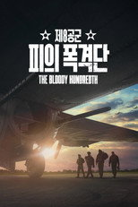
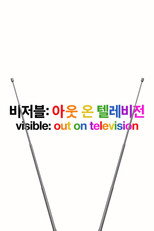
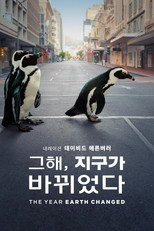
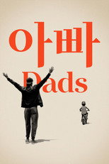
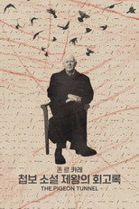
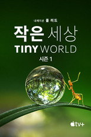
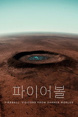
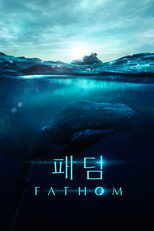
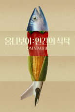

애플TV+ 다큐66편 중 인기 60편
순서: 넷플릭스 한국 TOP10 에 든 작품을 먼저(최근에 든 순), 그다음은 TMDB 전 세계 인기도 순입니다 — 넷플릭스 외 서비스는 공식 순위를 공개하지 않습니다. 제공처는 JustWatch 자료(2026-09-23 확인)이며 가입 전 서비스에서 최종 확인하세요. 애플TV+ 요금·할인 →
1'비스티 보이즈 스토리' - Beastie Boys Story Beastie Boys영화 · 2020 · 음악 · 다큐멘터리 · 120분 · 티빙에도넷플릭스 한국 최고 5위2 '선사시대: 공룡이 지배하던 지구' - Prehistoric Planet Prehistoric Planet시리즈 · 2022 · 다큐멘터리 · 티빙에도제공처 ↗3'미슐랭 스타: 칼날 위에 선 셰프들' - Knife Edge: Chasing Michelin Stars Knife Edge: Chasing Michelin Stars시리즈 · 2025 · 다큐멘터리 · 티빙에도제공처 ↗4'셀레나 고메즈: 마이 마인드 앤드 미' - Selena Gomez: My Mind & Me Selena Gomez: My Mind & Me영화 · 2022 · 다큐멘터리 · 음악 · 95분 · 티빙에도제공처 ↗5'자연에 깃든 밤의 색깔' - Earth at Night in Colour Earth at Night in Colour시리즈 · 2020 · 다큐멘터리 · 티빙에도제공처 ↗6'빛 속의 나를 만나러 와요' - Come See Me in the Good Light Come See Me in the Good Light영화 · 2025 · 다큐멘터리 · 104분 · 티빙에도제공처 ↗7
'선사시대: 공룡이 지배하던 지구' - Prehistoric Planet Prehistoric Planet시리즈 · 2022 · 다큐멘터리 · 티빙에도제공처 ↗3'미슐랭 스타: 칼날 위에 선 셰프들' - Knife Edge: Chasing Michelin Stars Knife Edge: Chasing Michelin Stars시리즈 · 2025 · 다큐멘터리 · 티빙에도제공처 ↗4'셀레나 고메즈: 마이 마인드 앤드 미' - Selena Gomez: My Mind & Me Selena Gomez: My Mind & Me영화 · 2022 · 다큐멘터리 · 음악 · 95분 · 티빙에도제공처 ↗5'자연에 깃든 밤의 색깔' - Earth at Night in Colour Earth at Night in Colour시리즈 · 2020 · 다큐멘터리 · 티빙에도제공처 ↗6'빛 속의 나를 만나러 와요' - Come See Me in the Good Light Come See Me in the Good Light영화 · 2025 · 다큐멘터리 · 104분 · 티빙에도제공처 ↗7
'선사시대: 공룡이 지배하던 지구' - Prehistoric Planet Prehistoric Planet시리즈 · 2022 · 다큐멘터리 · 티빙에도제공처 ↗3'미슐랭 스타: 칼날 위에 선 셰프들' - Knife Edge: Chasing Michelin Stars Knife Edge: Chasing Michelin Stars시리즈 · 2025 · 다큐멘터리 · 티빙에도제공처 ↗4'셀레나 고메즈: 마이 마인드 앤드 미' - Selena Gomez: My Mind & Me Selena Gomez: My Mind & Me영화 · 2022 · 다큐멘터리 · 음악 · 95분 · 티빙에도제공처 ↗5'자연에 깃든 밤의 색깔' - Earth at Night in Colour Earth at Night in Colour시리즈 · 2020 · 다큐멘터리 · 티빙에도제공처 ↗6'빛 속의 나를 만나러 와요' - Come See Me in the Good Light Come See Me in the Good Light영화 · 2025 · 다큐멘터리 · 104분 · 티빙에도제공처 ↗7
'제8공군: 피의 폭격단' - The Bloody Hundredth The Bloody Hundredth영화 · 2024 · 전쟁 · 다큐멘터리 · 63분 · 티빙에도제공처 ↗8
'비저블: 아웃 온 텔레비전' - Visible: Out on Television Visible: Out on Television시리즈 · 2020 · 다큐멘터리 · 티빙에도제공처 ↗9
'그해, 지구가 바뀌었다' - The Year Earth Changed The Year Earth Changed영화 · 2021 · 다큐멘터리 · 48분 · 티빙에도제공처 ↗10'시드니: 할리우드 전설의 진짜 이야기' - Sidney Sidney영화 · 2022 · 다큐멘터리 · 112분 · 티빙에도제공처 ↗11
'아빠' - Dads Dads영화 · 2019 · 다큐멘터리 · 81분제공처 ↗12'마이클 J. 폭스: 여전히, 그리고 언제나' - STILL: A Michael J. Fox Movie STILL: A Michael J. Fox Movie영화 · 2023 · 다큐멘터리 · 95분 · 티빙에도제공처 ↗13'엘리펀트 퀸' - The Elephant Queen The Elephant Queen영화 · 2019 · 다큐멘터리 · 가족 · 97분 · 티빙에도제공처 ↗14'빌리 아일리시: 조금 흐릿한 세상' - Billie Eilish: The World's a Little Blurry Billie Eilish: The World's a Little Blurry영화 · 2021 · 다큐멘터리 · 음악 · 140분 · 티빙에도제공처 ↗15'스티브 마틴! 코미디 전설의 인생 2부작' - STEVE! (martin) a documentary in 2 pieces STEVE! (martin) a documentary in 2 pieces시리즈 · 2024 · 다큐멘터리제공처 ↗16
'존 르 카레: 첩보 소설 제왕의 회고록' - The Pigeon Tunnel The Pigeon Tunnel영화 · 2023 · 다큐멘터리 · 92분 · 티빙에도제공처 ↗17스틸러 & 미라: 잃은 것은 없다' - Stiller & Meara: Nothing Is Lost Stiller & Meara: Nothing Is Lost영화 · 2025 · 다큐멘터리 · 98분 · 티빙에도제공처 ↗18'뒤틀린 요가: 그늘 속 제국' - Twisted Yoga Twisted Yoga시리즈 · 2026 · 다큐멘터리 · 티빙에도제공처 ↗19'마틴 스코세이지: 거장의 초상' - Mr. Scorsese Mr. Scorsese시리즈 · 2025 · 다큐멘터리 · 티빙에도제공처 ↗20'빵과 장미' - Bread & Roses Bread & Roses영화 · 2024 · 다큐멘터리 · 90분 · 티빙에도제공처 ↗21'마지막 해녀들' - The Last of the Sea Women The Last of the Sea Women영화 · 2024 · 다큐멘터리 · 87분 · 티빙에도제공처 ↗22'서렌더: U2 보노의 이야기' - Bono: Stories of Surrender Bono: Stories of Surrender영화 · 2025 · 다큐멘터리 · 음악 · 86분 · 티빙에도제공처 ↗23'데프 프레지던트 나우: 8일간의 혁명' - Deaf President Now! Deaf President Now!영화 · 2025 · 다큐멘터리 · 101분 · 티빙에도제공처 ↗24
'작은 세상' - Tiny World Tiny World시리즈 · 2020 · 다큐멘터리 · 티빙에도제공처 ↗25
'파이어볼: 어둠의 세계에서 온 방문자' - Fireball: Visitors from Darker Worlds Fireball: Visitors from Darker Worlds영화 · 2020 · 다큐멘터리 · 미스터리 · 98분 · 티빙에도제공처 ↗26'배짱 두둑한 사람들' - Gutsy Gutsy시리즈 · 2022 · 다큐멘터리제공처 ↗27
'패덤' - Fathom Fathom영화 · 2021 · 다큐멘터리 · 86분 · 티빙에도제공처 ↗28'유진 레비: 여행 혐오자의 일탈 여행' - The Reluctant Traveller with Eugene Levy The Reluctant Traveller with Eugene Levy시리즈 · 2023 · 다큐멘터리 · 티빙에도제공처 ↗29'슈퍼 모델: 런웨이 위의 레전드' - The Super Models The Super Models시리즈 · 2023 · 다큐멘터리 · 티빙에도제공처 ↗30'1971: 음악이 모든 것을 바꾼 해' - 1971: The Year That Music Changed Everything 1971: The Year That Music Changed Everything시리즈 · 2021 · 다큐멘터리 · 티빙에도제공처 ↗31'친애하는...' - Dear... Dear...시리즈 · 2020 · 다큐멘터리제공처 ↗32'마크 론슨과 들여다보는 사운드의 세계' - Watch the Sound with Mark Ronson Watch the Sound with Mark Ronson시리즈 · 2021 · 다큐멘터리 · 티빙에도제공처 ↗33'루이 암스트롱: 블랙 & 블루스' - Louis Armstrong's Black & Blues Louis Armstrong's Black & Blues영화 · 2022 · 다큐멘터리 · 음악 · 104분 · 티빙에도제공처 ↗34'그레이트니스 코드' - Greatness Code Greatness Code시리즈 · 2020 · 다큐멘터리제공처 ↗35'와일드 라이프: 지구의 가장 희귀한 동물들' - The Wild Ones The Wild Ones시리즈 · 2025 · 다큐멘터리 · 액션 · 티빙에도제공처 ↗36'9/11: 백악관 상황실, 그 안에선 무슨 일이 있었나' - 9/11: Inside the President's War Room 9/11: Inside the President's War Room영화 · 2021 · 다큐멘터리 · 역사 · 89분 · 디즈니+, 티빙에도제공처 ↗37'코트 위의 매직, 매직 존슨' - They Call Me Magic They Call Me Magic시리즈 · 2022 · 다큐멘터리 · 티빙에도제공처 ↗38'끝까지! 바모스 레알 마드리드!' - Real Madrid: Until the End Real Madrid: Hasta el final시리즈 · 2023 · 다큐멘터리 · 티빙에도제공처 ↗39'영광을 향하여: 2024 월드 시리즈' - Fight for Glory: 2024 World Series Fight for Glory: 2024 World Series시리즈 · 2025 · 다큐멘터리 · 웨이브에도제공처 ↗40'메시: 카타르 월드컵의 영웅' - Messi's World Cup: The Rise of a Legend Messi's World Cup: The Rise of a Legend시리즈 · 2024 · 다큐멘터리제공처 ↗41'당신이 보지 못하는 나' - The Me You Can't See The Me You Can't See시리즈 · 2021 · 다큐멘터리 · 티빙에도제공처 ↗42'미식축구 전설의 팀 패트리어츠' - The Dynasty: New England Patriots The Dynasty: New England Patriots시리즈 · 2024 · 다큐멘터리제공처 ↗43'홈' - Home Home시리즈 · 2020 · 다큐멘터리 · 티빙에도제공처 ↗44'롱 웨이 홈' - Long Way Home Long Way Home시리즈 · 2025 · 다큐멘터리 · 티빙에도제공처 ↗45
'옴니보어: 인간의 식탁' - Omnivore Omnivore시리즈 · 2024 · 다큐멘터리 · 티빙에도제공처 ↗46'롱 웨이 업' - Long Way Up Long Way Up시리즈 · 2020 · 다큐멘터리 · 티빙에도제공처 ↗47'걸스 스테이트' - Girls State Girls State영화 · 2024 · 다큐멘터리 · 95분제공처 ↗48'자이언트: 거대 동물의 생존 방식' - Big Beasts Big Beasts시리즈 · 2023 · 다큐멘터리 · 티빙에도제공처 ↗49'여자 농구 전설의 팀 허스키스' - The Dynasty: UConn Huskies The Dynasty: UConn Huskies시리즈 · 2026 · 다큐멘터리 · 티빙에도제공처 ↗50'보리스 베커, 세상에 맞서다' - Boom! Boom! The World vs Boris Becker Boom! Boom! The World vs Boris Becker시리즈 · 2023 · 다큐멘터리제공처 ↗51'스테판 커리: 전설이 된 언더독' - Stephen Curry: Underrated Stephen Curry: Underrated영화 · 2023 · 다큐멘터리 · 110분 · 티빙에도제공처 ↗52'우리가 몰랐던 동물들의 삶' - The Secret Lives of Animals The Secret Lives of Animals시리즈 · 2024 · 다큐멘터리 · 티빙에도제공처 ↗53'지구의 목소리' - Earthsounds Earthsounds시리즈 · 2024 · 다큐멘터리 · 티빙에도제공처 ↗54'보이즈 스테이트' - Boys State Boys State영화 · 2020 · 다큐멘터리 · 110분 · 티빙에도제공처 ↗55'슈퍼 리그: 축구 전쟁' - Super League: The War for Football Super League: The War for Football시리즈 · 2023 · 다큐멘터리 · 티빙에도제공처 ↗56'베트남 전쟁: 미국은 어떻게 달라졌나' - Vietnam: The War That Changed America Vietnam: The War That Changed America시리즈 · 2025 · 다큐멘터리 · 티빙에도제공처 ↗57'크리스마스 전쟁' - 'Twas the Fight Before Christmas 'Twas the Fight Before Christmas영화 · 2021 · 다큐멘터리 · 91분제공처 ↗58'비커밍 유' - Becoming You Becoming You시리즈 · 2020 · 다큐멘터리제공처 ↗59'브루스 스프링스틴의 레터 투 유' - Bruce Springsteen's Letter to You Bruce Springsteen's Letter to You영화 · 2020 · 다큐멘터리 · 음악 · 90분제공처 ↗60'링컨의 딜레마' - Lincoln's Dilemma Lincoln's Dilemma시리즈 · 2022 · 다큐멘터리제공처 ↗